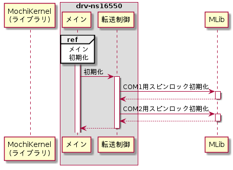
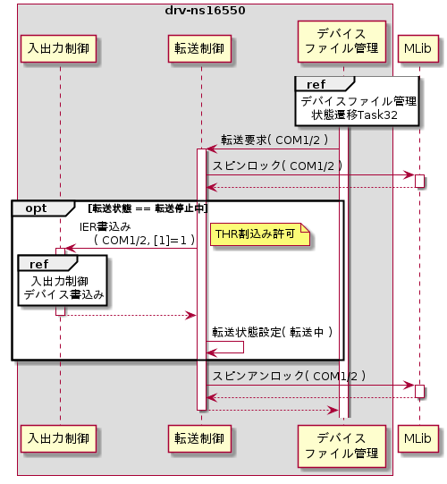
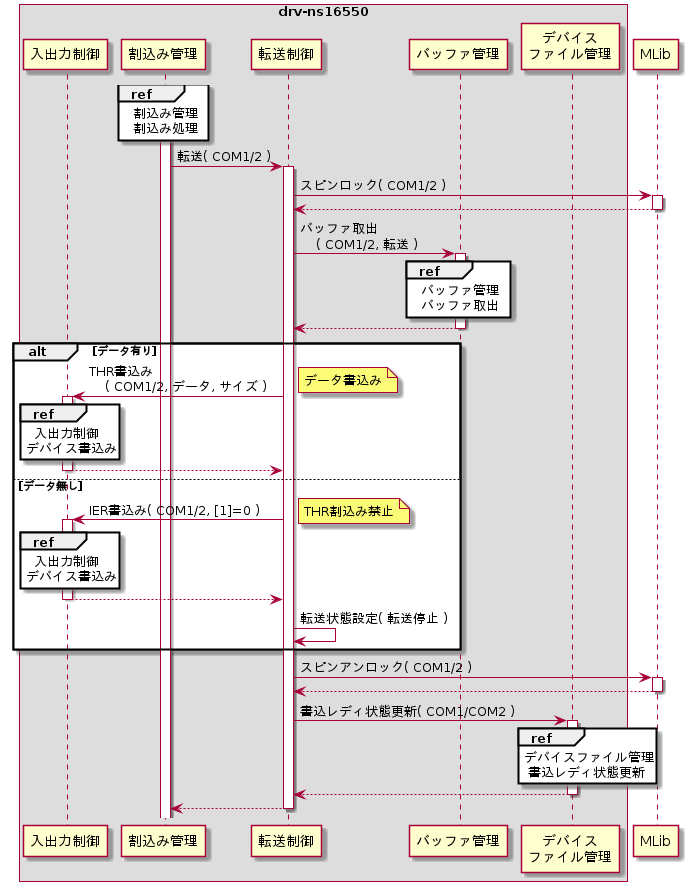

転送制御モジュール
メインモジュールは下記機能を持つ。
初期化
drv-ns16550起動時に転送制御モジュールが行う初期化処理は無い。初期化シーケンスを以下に示す。

スピンロック初期化
メインスレッド上で実行する転送要求と割込み管理スレッド上で実行する転送処理との排他制御を行うために使用するデバイス毎のスピンロックを初期化する。スピンロック初期化はMLibライブラリのMLibSpinInit()を用いる。
転送要求
デバイスファイル管理から転送要求が起動された時にTHR割込みを有効化し転送を再開する。転送要求シーケンスを以下に示す。

スピンロック
割込み管理スレッド上で実行する転送処理との排他制御を行うため、スピンロックする。スピンロックはMLibライブラリのMLibSpinLock()を用いる。
THR割込み許可
不要な処理をしないようにするために転送状態が停止中の場合にのみTHR割込み許可を行う。THR割込み許可は入出力制御モジュールの機能を用いたIER書込みによって行う。外部仕様(デバイスファイルwrite要求処理機能)のTHR割込み有効化を参照のこと。
転送状態設定
THR割込み許可設定を行った場合は、転送状態を転送中に設定する。
スピンアンロック
スピンロックをアンロックする。スピンアンロックはMLibライブラリのMLibSpinUnlock()を用いる。
転送
転送要求を送信後、デバイスファイル管理モジュールから転送機能が呼び出される。転送シーケンスを以下に示す。

スピンロック
メインスレッド上で実行する転送要求との排他制御を行うため、スピンロックする。スピンロックはMLibライブラリのMLibSpinLock()を用いる。
バッファ取出し
転送するデータをバッファ管理モジュールから最大16byte取り出す。1byte以上取り出せた場合はデバイスにデータ書込みを実施し、1byteも取り出せなかった場合はTHR割込みを禁止する。
データ書込み
転送バッファから取り出せたデータ全てを入出力制御モジュールの機能を用いてTHRに書き込む。外部仕様(デバイス転送機能)のデータ転送を参照のこと。
THR割込み禁止設定
転送バッファにデータが無かった場合に入出力制御モジュールの機能を用いてTHR割込みを禁止する。外部仕様(デバイス転送機能)のTHR割込み無効化を参照のこと。
転送状態設定
THR割込みを禁止に設定した場合に、転送状態を停止中として記録する。転送状態は転送要求時に転送再開をするか判断するために使用する。
スピンアンロック
スピンロックをアンロックする。スピンアンロックはMLibライブラリのMLibSpinUnlock()を用いる。